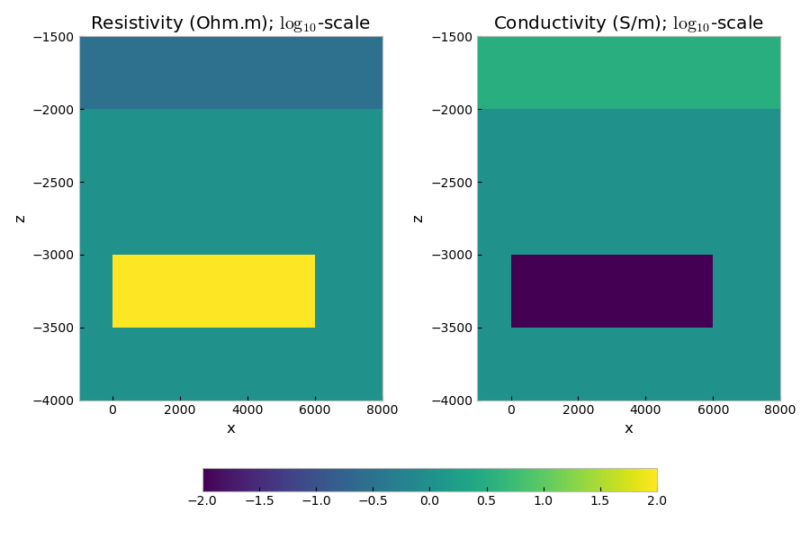
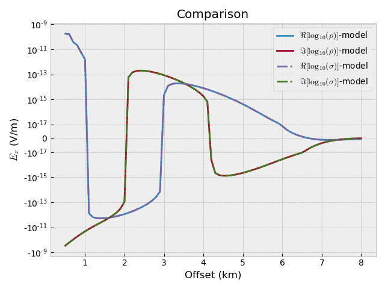

Note
Click here to download the full example code
02. Model property mapping#
Physical rock properties (and their units) can be a tricky thing. And emg3d is no difference in this respect. It was first developed for oil and gas, having resistive bodies in mind. You will therefore find that the documentation often talks about resistivity (Ohm.m). However, internally the computation is carried out in conductivities (S/m), so resistivities are converted into conductivities internally. For the simple forward model this is not a big issue, as the output is simply the electromagnetic field. However, moving over to optimization makes things more complicated, as the gradient of the misfit function, for instance, depends on the parametrization.
Since emg3d v0.12.0 it is therefore possible to define a
emg3d.models.Model in different ways, thanks to different maps,
defined with the parameter mapping. Currently implemented are six different
maps:
'Resistivity': \(\rho\) (Ohm.m), the default;'LgResistivity': \(\log_{10}(\rho)\);'LnResistivity': \(\log_e(\rho)\);'Conductivity': \(\sigma\) (S/m);'LgConductivity': \(\log_{10}(\sigma)\);'LnConductivity': \(\log_e(\sigma)\).
We take here the model from
05. Total vs primary/secondary field and map it once as
'LgResistivity' and once as 'LgConductivity', and verify that the
resulting electric field is the same.
import emg3d
import numpy as np
import matplotlib.pyplot as plt
plt.style.use('bmh')
Survey#
Mesh#
We create quite a coarse grid (100 m minimum cell width), to have reasonable fast computation times.
Define resistivities#
# Layered_background
res_x = np.ones(grid.n_cells)*res[0] # Water resistivity
res_x[grid.cell_centers[:, 2] < -2000] = res[1] # Background resistivity
# Include the target
xx = (grid.cell_centers[:, 0] >= 0) & (grid.cell_centers[:, 0] <= 6000)
yy = abs(grid.cell_centers[:, 1]) <= 500
zz = (grid.cell_centers[:, 2] > -3500)*(grid.cell_centers[:, 2] < -3000)
res_x[xx*yy*zz] = 100. # Target resistivity
Create LgResistivity and LgConductivity models#
# Create log10-res model
model_lg_res = emg3d.Model(
grid, property_x=np.log10(res_x), mapping='LgResistivity')
# Create log10-con model
model_lg_con = emg3d.Model(
grid, property_x=np.log10(1/res_x), mapping='LgConductivity')
# Plot the models
fig, axs = plt.subplots(figsize=(9, 6), nrows=1, ncols=2)
# log10-res
f0 = grid.plot_slice(model_lg_res.property_x, v_type='CC',
normal='Y', ax=axs[0], clim=[-2, 2])
axs[0].set_title(r'Resistivity (Ohm.m); $\log_{10}$-scale')
axs[0].set_xlim([-1000, 8000])
axs[0].set_ylim([-4000, -1500])
# log10-con
f1 = grid.plot_slice(model_lg_con.property_x, v_type='CC',
normal='Y', ax=axs[1], clim=[-2, 2])
axs[1].set_title(r'Conductivity (S/m); $\log_{10}$-scale')
axs[1].set_xlim([-1000, 8000])
axs[1].set_ylim([-4000, -1500])
plt.tight_layout()
fig.colorbar(f0[0], ax=axs, orientation='horizontal', fraction=0.05)
plt.show()

Compute electric fields#
source = emg3d.TxElectricDipole(coordinates=src)
solver_opts = {
'source': source,
'frequency': freq,
'verb': 1,
}
efield_lg_res = emg3d.solve_source(model_lg_res, **solver_opts)
efield_lg_con = emg3d.solve_source(model_lg_con, **solver_opts)
# Extract responses at receiver locations.
rec_lg_res = efield_lg_res.get_receiver((*rec, 0, 0))
rec_lg_con = efield_lg_con.get_receiver((*rec, 0, 0))
:: emg3d :: 8.9e-07; 1(4); 0:00:05; CONVERGED
:: emg3d :: 8.9e-07; 1(4); 0:00:05; CONVERGED
Compare the two results#
plt.figure()
plt.title('Comparison')
# Log_10(resistivity)-model.
plt.plot(off/1e3, rec_lg_res.real, 'C0',
label=r'$\Re[\log_{10}(\rho)]$-model')
plt.plot(off/1e3, rec_lg_res.imag, 'C1-',
label=r'$\Im[\log_{10}(\rho)]$-model')
# Log_10(conductivity)-model.
plt.plot(off/1e3, rec_lg_con.real, 'C2-.',
label=r'$\Re[\log_{10}(\sigma)]$-model')
plt.plot(off/1e3, rec_lg_con.imag, 'C3-.',
label=r'$\Im[\log_{10}(\sigma)]$-model')
plt.xlabel('Offset (km)')
plt.ylabel('$E_x$ (V/m)')
plt.yscale('symlog', linthresh=1e-17)
plt.legend()
plt.tight_layout()
plt.show()

Total running time of the script: ( 0 minutes 12.046 seconds)
Estimated memory usage: 45 MB